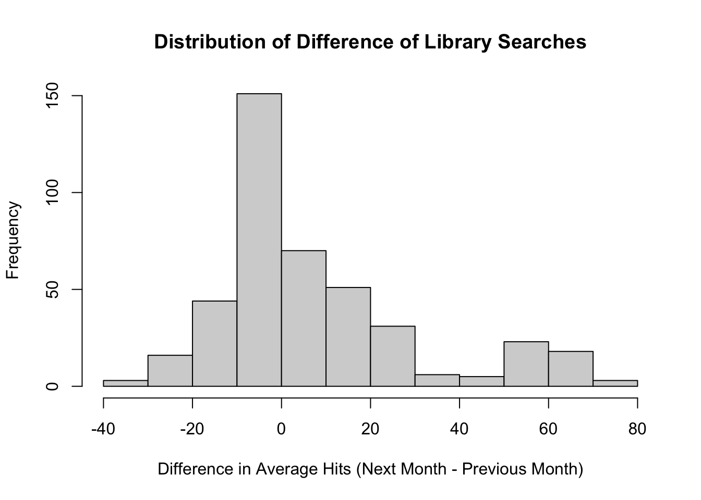
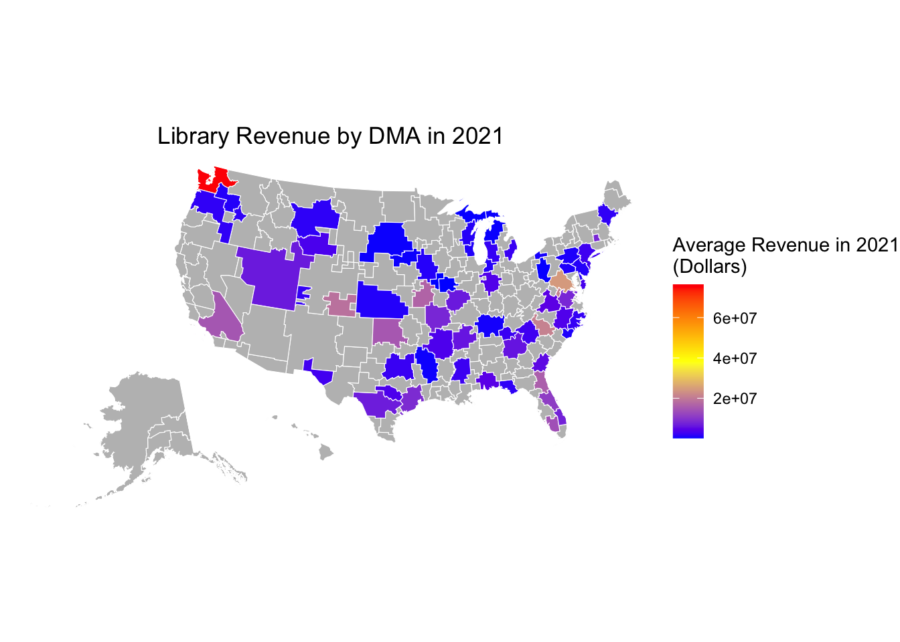

The Impact of Book Bans on Libraries
Library Usage & Demand in Areas Affected by Book Bans
Introduction
Since 2021, book bans have become a regular in U.S. headlines (Ananthakrishnan, 2023). Though they are not a new phenomenon, George Floyd’s death in 2020 spurred a social movement that triggered an opposing effort that aimed to censor literature related to “critical race theory” (Shearer, 2022). This has also extended to books surrounding topics related to race, gender, and LGBTQ+ issues (Ananthakrishnan, 2023). In 2023, the majority of challenges took place at public libraries (54%) with school libraries coming in second at 39% (ALA, 2023). According to the American Library Association, 2023 had the highest number of unique book titles (4,240) targeted for a book ban out of twenty years of tracking, increasing by 65% since 2022 (ALA, 2023). Part of this significant rise in bans is due to the recent development of the political nature of book bans; censorship in libraries is now an organized operation that aims to galvanize voting populations instead of a means of effective censorship (Langrock 2023). Other literature on censorship also supports the claim that forms of intellectual suppression tend to have the opposite intended effect (Hobbs, 2017).
Previous research has analyzed the effect of book bans on the censorship of the specific literature these efforts target, and most have concluded that they are ineffective and raise more awareness. However, impacts on the libraries that provide these resources have not been as researched, and evidence for these effects are anecdotal or isolated incidents. Library funding has been cut in areas that have efforts resisting book bans, and processing book bans is a significant expense (Archie, 2023). Aside from monetary resources, human resources have also been depleted as librarians quit due to fears of safety from harassment from book-banning advocates (NPR, 2023). Identifying the potential impacts that book bans have on public libraries can assist in deciding where resources should best be allocated; if censorship is ineffective but libraries are becoming less-resourced, efforts can be refocused on assisting impacted libraries rather than focusing on spreading awareness about banned books. These analyses aim to explore (1) the funding of libraries in areas targeted by book bans and challenges and (2) how book bans and challenges affect interest and engagement in local public libraries and their programs, filling a gap in current research about the impacts of book bans.
Background and Hypotheses
Public Library Funding
Book bans ultimately require a significant amount of funding to process (Langrock, 2023). On top of this, states such as Missouri, Michigan, Texas, Arkansas, and Wyoming among others, typically with larger Republican voter populations, have begun to defund libraries. Langrock and colleagues found that books are typically banned in libraries located in counties where there was a change in vote share won by Republican candidates in U.S. presidential elections (Langrock, 2023). Considering that book banning is a political strategy under this current context, there is a potential indication that book bans are in areas with under-resourced public libraries or currently deteriorating libraries. The effect of redistribution of library expenses to book ban processing, funding cuts from state governments, and a decrease in library staffing due to safety concerns could support a correlated decrease in library funds (NPR, 2023).
Hypothesis 1a: The amount of funding provisioned to libraries in areas targeted by more book bans and challenges has decreased from 2019 to 2021.
Hypothesis 1b: There is less funding provisioned to libraries in areas targeted by more book bans and challenges.
Levels of Usage and Interest
Two studies specifically looking at book bans found inverse relationships between the number of book bans and awareness. Authors found that book banning is an ineffective censorship tactic and in some cases, may raise more awareness around these books (Langrock, 2023). Ananthakrishnan and colleagues found that the circulation of banned books counterintuitively increased by 12% (Ananthakrishnan, 2023). However, there is a gap in research on whether communities targeted by book bans seek resources from their local libraries and if book bans impact demand on libraries. Counterproductive censorship attempts, a phenomenon primarily known as the “Streisand effect,” have been exhibited in Barbara Streisand’s attempts to censor online views on her property and state-level censorship in Pakistan and Turkey (Jansen, 2015; Nabi 2014). Research that has found an increase in attention surrounding banned books and previously known examples of the “Streisand effect” could support a potential increase in libraries or general usage in areas affected by book bans.
Hypothesis 2a: Interest in public libraries increases in areas that are targeted by book bans.
Hypothesis 2b: The usage of libraries in areas targeted by more book bans and challenges increases.
Methods
PEN America’s Index of School Book Bans
PEN America’s new Index of School Book Bans records provides a list of book titles as well as their corresponding district banned during the 2021-2022 and 2022-2023 school years across 33 states (PEN America, 2023). When the data across both school years are combined, there are 5,894 unique instances of a book at a school library being challenged based on its content between 2021 and 2023. Dates of book bans were standardized into month and year variables, school districts were mapped to counties, and DMA (Designated Market Area) regions (Nielsen, 2024).
IMLS Public Library Survey
The Institute of Museum and Library Services conducts an annual voluntary census of public libraries in the United States called the “Public Libraries Survey” (IMLS, 2023). The most recent publicly available census was from 2021, which was compared with survey data from 2019. To measure library usage and library funding, the following variables were used from the surveys (IMLS, 2023).
To calculate a “library usage index”:
Circulation
TOTCIR: Total circulation of materials.
TOTCOLL: Total collection use.
Technology Use
PITUSR: Public internet computer uses per year.
ELINFO: Retrieval of electronic information.
ELCONT: Electronic content use.
Service
VISITS: Library visits.
REFERENC: Total reference transactions.
LOANTO: Total loans provided to other libraries.
LIBRARIA: Total librarians.
To calculate the total funding that year:
CAP_REV: Total capital revenue.
TOTINCM: Total operating revenue.
To calculate the “library usage index,” the various categories of variables were summed then weighted differently: circulation (0.4), technology use (0.3), and service (0.3). The index was then standardized and averaged by DMA. Total funding was calculated by summing capital and operating revenue and averaging it by DMA. In order to account for population size in relation to library funding, population totals were also calculated for each DMA using census data collected using the R package “tidycensus” (Walker, 2024).
Google Trends
Google Trends, part of the Google News Initiative, analyzes samples of Google searches to provide data that determines volumes of searches for a specific topic over a specific period of time (Google News Initiative, 2016). Data is normalized on a 0-100 scale, and location can be provided as a parameter. Since DMAs (Designated Market Area) were the smallest geographical areas Google Trends supports, county-level data during cleaning was mapped to corresponding DMAs.
Because there is no national real-time data for interest or visits to public libraries, analyzing the volume of Google searches is an alternative way to analyze this variable. The two search terms used to measure interest were “library near me” and “library”. For each unique DMA region and corresponding book banning month and year, Google Trends was queried with the “gtrendsR” package (Massicotte, 2022). The sum of interest for both search terms and the difference in search interest the month before the book ban and the month after the book ban was calculated.
Models & Variables
Regression models are used in this study to test the four hypotheses. Variables utilized in the models are defined as follows:
avg_hits_next_month: Average search interest in local libraries in a DMA the month before bans.avg_hits_prev_month: Average search interest in local libraries in a DMA the month after bans.avg_revenue_2019:Average total revenue of libraries in a DMA in 2019.avg_revenue_2021: Average total revenue of libraries in a DMA in 2021.tot_pop: Total estimated population in a DMA.count: Total book bans and challenges in a DMA during a specific month and year.tot_count: Total book bans and challenges in a DMA from 2021 - 2023.std_avg_index_2019: Standardized “library usage index” in 2019.std_avg_index_2021: Standardized “library usage index” in 2021.num_lib_2021: Number of libraries in a DMA in 2021.
The following are regression models which were fit using the ordinary least squares distribution based on the variables’ normal distribution.
Model 1a: avg_revenue_2021 - avg_revenue_2019 = tot_count + tot_pop
Model 1b: avg_revenue_2021 = tot_count + tot_pop
Model 2a: avg_hits_next_month - avg_hits_prev_month = count + num_lib_2021
Model 2b: std_avg_index_2021 - std_avg_index_2019 = tot_count + tot_pop
Model 2c: std_avg_index_2021 = tot_count + tot_pop
Overview of Data
421 unique combinations of DMA, month, and year for recorded book bans were collected, with 93 out of 210 DMAs containing book bans. NAs in the data are due to the fact that not all DMAs have documented or reported book bans, as shown by the greyed areas on the map below.
Figure 1. Map of Count of Book Bans by DMA
The data was overrepresented by records of book bans from two DMAs: Jacksonville, Florida (2884 bans and challenges) and Dallas - Ft. Worth, Texas (2618 bans and challenges).
Figure 2. Top 20 DMAs by Book Bans Count
Search trends for interest in libraries had a generally normal distribution that was skewed a little to the right, most have little to no change in search interest.
Figure 3. Histogram of Distribution of Difference in Search hits

Table 1. Top 10 unique DMA, month, and year combinations with the highest difference in search interest before and after an instance of book bans.
| DMA | Date | Hit.Difference |
|---|---|---|
| ANCHORAGE (AK) | 10-2021 | 77.00 |
| HARRISBURG (PA) - LANCASTER (PA) - LEBANON (PA) - YORK (PA) | 10-2021 | 74.00 |
| KANSAS CITY (MO) | 10-2021 | 72.00 |
| CHATTANOOGA (TN) | 10-2021 | 69.00 |
| HARRISONBURG | 11-2021 | 68.00 |
| RICHMOND (VA) - PETERSBURG (VA) | 11-2021 | 67.75 |
| ORLANDO (FL) - DAYTONA BEACH (FL) - MELBOURNE (FL) | 10-2021 | 67.00 |
| PHILADELPHIA (PA) | 10-2021 | 66.00 |
| SALT LAKE CITY (UT) | 10-2021 | 66.00 |
| NORFOLK (VA) - PORTSMOUTH (VA) - NEWPORT NEWS (VA) | 10-2021 | 65.00 |
Analysis and Results
Hypothesis 1a:
Figure 4 plots the correlation between difference in total revenue of libraries in a DMA from 2019 to 2021 and total count of book bans and challenges in that DMA as the predictor variable. A negative correlation would indicate a lesser amount of funding allocated or a decrease in funding if the data goes below the 0 line. Visually, the graph appears to have a small negative trend, though the two outliers are likely influencing the negative correlation.
Figure 4. Average Revenue Difference (2021-2019) vs. Total Book Bans Count
Model 1a accounts for the potential effect of total population in the DMA on the amount of funding a library receives. Based on the model, there is no significant relationship between the total count of book bans and challenges and the change in library revenue between 2019 and 2021, thereby not providing support for Hypothesis 1b.
Table 2. Regression Results of Model 1a
Call:
lm(formula = avg_revenue_2021 - avg_revenue_2019 ~ tot_count +
tot_pop, data = hits_combined_df_grouped)
Residuals:
Min 1Q Median 3Q Max
-4954146 -1146873 -862109 454080 5282637
Coefficients:
Estimate Std. Error t value Pr(>|t|)
(Intercept) 1.158e+06 2.872e+05 4.032 0.000115 ***
tot_count -2.892e+02 5.351e+02 -0.540 0.590192
tot_pop -5.839e-02 9.010e-02 -0.648 0.518643
---
Signif. codes: 0 '***' 0.001 '**' 0.01 '*' 0.05 '.' 0.1 ' ' 1
Residual standard error: 2175000 on 90 degrees of freedom
(18 observations deleted due to missingness)
Multiple R-squared: 0.01001, Adjusted R-squared: -0.01199
F-statistic: 0.4552 on 2 and 90 DF, p-value: 0.6358Hypothesis 1b:
Figure 5 shows a geographical distribution of the average library revenue in 2021 by DMA, which when visually compared with the map containing the number of book bans in DMAs, does not reveal any immediate trends.
Figure 5. Map of Average Library Revenue in 2021 by DMA

Similar to Model 1a, the total count of book bans in each DMA had no significant relationship to the average library revenue of DMAs in 2021. As a result, Hypothesis 1b is also not supported since there is no negative correlation between revenue in 2021 and number of book bans.
Table 3. Regression Results of Model 1b
Call:
lm(formula = log_avg_revenue_2021 ~ tot_count + tot_pop, data = hits_combined_df_grouped)
Residuals:
Min 1Q Median 3Q Max
-2.6745 -0.9104 -0.1023 0.8923 2.6233
Coefficients:
Estimate Std. Error t value Pr(>|t|)
(Intercept) 1.491e+01 1.697e-01 87.829 <2e-16 ***
tot_count -1.556e-04 3.162e-04 -0.492 0.6238
tot_pop 1.131e-07 5.325e-08 2.124 0.0364 *
---
Signif. codes: 0 '***' 0.001 '**' 0.01 '*' 0.05 '.' 0.1 ' ' 1
Residual standard error: 1.286 on 90 degrees of freedom
(18 observations deleted due to missingness)
Multiple R-squared: 0.04772, Adjusted R-squared: 0.02656
F-statistic: 2.255 on 2 and 90 DF, p-value: 0.1108Hypothesis 2a:
Figure 6 visualizes the relationship with average search hit difference between the month after a book banning instance and the month prior to it and the number of book bans in that event. There appears to be a negative correlation between the two variables, which would imply that as bans increase, the amount of search interest decreases.
Figure 6. Average Search Hit Difference (Next Month - Previous Month) vs. Book Bans Count
Based on the results from Model 2a that accounts for the number of libraries in DMAs when predicting search volume, there is a small p-value (p < 0.1) but not enough to declare a significant correlation between the two variables. Thus, we fail to support Hypothesis 2a as well.
Table 4. Regression Results of Model 2a
Call:
lm(formula = avg_hits_next_month - avg_hits_prev_month ~ count +
num_lib_2021, data = hits_combined_df)
Residuals:
Min 1Q Median 3Q Max
-42.411 -13.743 -7.613 7.385 69.135
Coefficients:
Estimate Std. Error t value Pr(>|t|)
(Intercept) 7.859973 1.350441 5.820 1.17e-08 ***
count -0.017517 0.009015 -1.943 0.0527 .
num_lib_2021 0.022744 0.027311 0.833 0.4055
---
Signif. codes: 0 '***' 0.001 '**' 0.01 '*' 0.05 '.' 0.1 ' ' 1
Residual standard error: 22.33 on 418 degrees of freedom
Multiple R-squared: 0.01068, Adjusted R-squared: 0.005942
F-statistic: 2.255 on 2 and 418 DF, p-value: 0.1061Hypothesis 2b:
Figure 7 shows the relationship between the change in library usage index between 2021 and 2019 and the total number of book bans in the area. There appears to be no correlation at all as the model’s trendline is nearly horizontal.
Figure 7. Average Usage Index Difference (2021 - 2019) vs. Total Book Bans Count
The results of Model 2b, which accounts for the DMA’s total population, confirm the visualization as there is no significant correlation between the difference in library usage index between 2021 and 2019 and the total number of book bans in that DMA between 2019 and 2021. Therefore, there is no support for Hypothesis 2b.
Table 5. Regression Results of Model 2b
Call:
lm(formula = std_avg_index_2021 - std_avg_index_2019 ~ tot_count +
tot_pop, data = hits_combined_df_grouped)
Residuals:
Min 1Q Median 3Q Max
-4.5753 -0.0990 -0.0518 0.0339 1.3651
Coefficients:
Estimate Std. Error t value Pr(>|t|)
(Intercept) 1.179e-02 7.937e-02 0.149 0.882
tot_count -2.259e-05 1.479e-04 -0.153 0.879
tot_pop 3.249e-08 2.490e-08 1.304 0.195
Residual standard error: 0.6013 on 90 degrees of freedom
(18 observations deleted due to missingness)
Multiple R-squared: 0.01876, Adjusted R-squared: -0.003047
F-statistic: 0.8603 on 2 and 90 DF, p-value: 0.4265Figure 8 is a representation of the geographical distribution of the average library usage index by DMAs, which has no apparent visual correlation with the map of counts of book bans and challenges by DMA.
Figure 8. Map of Average Library Usage Index by DMA

The results of Model 2c, which account fot the total population in each DMA, confirm what is shown in Figure 8 as there is no significant correlation between the two variables. Because there is no positive correlation between total count of book bans and challenges and the average library usage index, Hypothesis 2b is not supported.
Table 6. Regression Results of Model 2c
Call:
lm(formula = std_avg_index_2021 ~ tot_count + tot_pop, data = hits_combined_df_grouped)
Residuals:
Min 1Q Median 3Q Max
-1.6335 -0.5888 -0.4688 0.5020 4.8654
Coefficients:
Estimate Std. Error t value Pr(>|t|)
(Intercept) -2.409e-02 1.353e-01 -0.178 0.8591
tot_count -2.972e-04 2.521e-04 -1.179 0.2415
tot_pop 1.021e-07 4.245e-08 2.404 0.0183 *
---
Signif. codes: 0 '***' 0.001 '**' 0.01 '*' 0.05 '.' 0.1 ' ' 1
Residual standard error: 1.025 on 90 degrees of freedom
(18 observations deleted due to missingness)
Multiple R-squared: 0.06466, Adjusted R-squared: 0.04387
F-statistic: 3.111 on 2 and 90 DF, p-value: 0.0494Discussion
Conclusion & Limitations
Bibliography
American Library Association. (2023, April 20). Censorship by the Numbers. Retrieved April 29, 2024, from Advocacy, Legislation & Issues website: https://www.ala.org/advocacy/bbooks/by-the-numbers
Archie, A. (2023, September 20). There have been attempts to censor more than 1,900 library book titles so far in 2023. Retrieved April 29, 2024, from NPR website: https://www.npr.org/2023/09/20/1200647985/book-bans-libraries-schools
Ananthakrishnan, U. M., Basavaraj, N., Karmegam, S. R., Sen, A., & Smith, M. D. (2023). Book Bans in American Libraries: Impact of Politics on Inclusive Content Consumption. SSRN Electronic Journal. https://doi.org/10.2139/ssrn.4489684
Google News Initiative. (2016). Google Trends: Understanding the data. Retrieved April 30, 2024, from https://newsinitiative.withgoogle.com/resources/trainings/google-trends-understanding-the-data/
Hobbs, W. R., & Roberts, M. (2017). How Sudden Censorship Can Increase Access to Information. Social Science Research Network. https://doi.org/10.2139/ssrn.2990593
Institute of Museum and Library Services (2023). Public Libraries Survey Fiscal Year 2021 Data File Documentation and User’s Guide. Retrieved from https://www.imls.gov/sites/default/files/2023-06/2021_pls_data_file_documentation.pdf
Jansen, S. C., & Martin, B. (2015). The Streisand Effect and Censorship Backfire. International Journal of Communication, 9(0), Article 0.
Langrock, I., LaViolette, J., Goncalves, M., & Spoon, K. (2023). Book Bans in Political Context: Evidence from U.S. Public Schools. Social Science Research Network. https://doi.org/10.2139/ssrn.4618699
Massicotte, P. (2022). Perform and Display Google Trends Queries [R package gtrendsR version 1.5.1]. (2022). R-Project.org. https://cran.r-project.org/package=gtrendsR
Nabi, Z. (2014). R̶e̶s̶i̶s̶t̶a̶n̶c̶e̶ censorship is futile. First Monday. https://doi.org/10.5210/fm.v19i11.5525
Nielsen. (2024, March 11). DMA® Regions Retrieved April 30, 2024, from Nielsen website: https://www.nielsen.com/dma-regions/
NPR. (2023, August 11). The Battle Over Book Bans Takes a Toll on Librarians and Comes at a Financial cost. Retrieved April 29, 2024, from NPR website: https://www.npr.org/transcripts/1193446007
PEN America. (2023, September 21). Banned Book List: 3,362 Books Banned in 2022-2023. Retrieved April 30, 2024, from PEN America website: https://pen.org/2023-banned-book-list/
Shearer, M. (2022). Banning Books or Banning BIPOC? Northwestern University Law Review Online, 117, 24–45.
Walker, K. (2024). Load US Census Boundary and Attribute Data as “tidyverse” and “sf”-Ready Data Frames [R package tidycensus version 1.6.3]. R-Project.org. https://cran.r-project.org/package=tidycensus